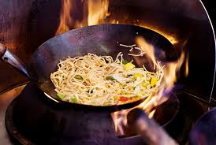
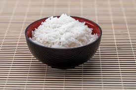
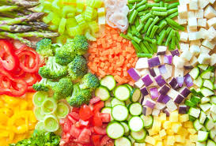

Trucchi per migliorare le tue ricette orientali
La cucina orientale non è solo questione di ricette, ma di filosofia e tecnica. Ogni piatto racchiude secoli di tradizione, e imparare a cucinare orientale significa rispettarne i tempi, gli ingredienti e i metodi.

La padella perfetta: il Wok
Il wok è uno strumento essenziale nella cucina asiatica. Grazie alla sua forma concava, consente una cottura veloce e uniforme, mantenendo il sapore e la consistenza degli ingredienti.
❌ Errori da evitare con le bacchette
- Non infilzare il cibo con le bacchette.
- Evita di piantarle verticalmente nella ciotola di riso, gesto associato ai rituali funebri.
- Non passare il cibo da bacchetta a bacchetta.
- Evita di indicare qualcuno con le bacchette.
- Non leccare o mordicchiare le bacchette.

⚠️ Ingredienti indispensabili
- Salsa di soia (chiara e scura)
- Olio di sesamo
- Zenzero e aglio freschi
- Mirin e aceto di riso
- Latte di cocco, curry in pasta

🍳 Tecniche di cottura
- Taglia gli ingredienti prima di iniziare
- Cuoci a fuoco alto nel wok
- Mescola di continuo per uniformità